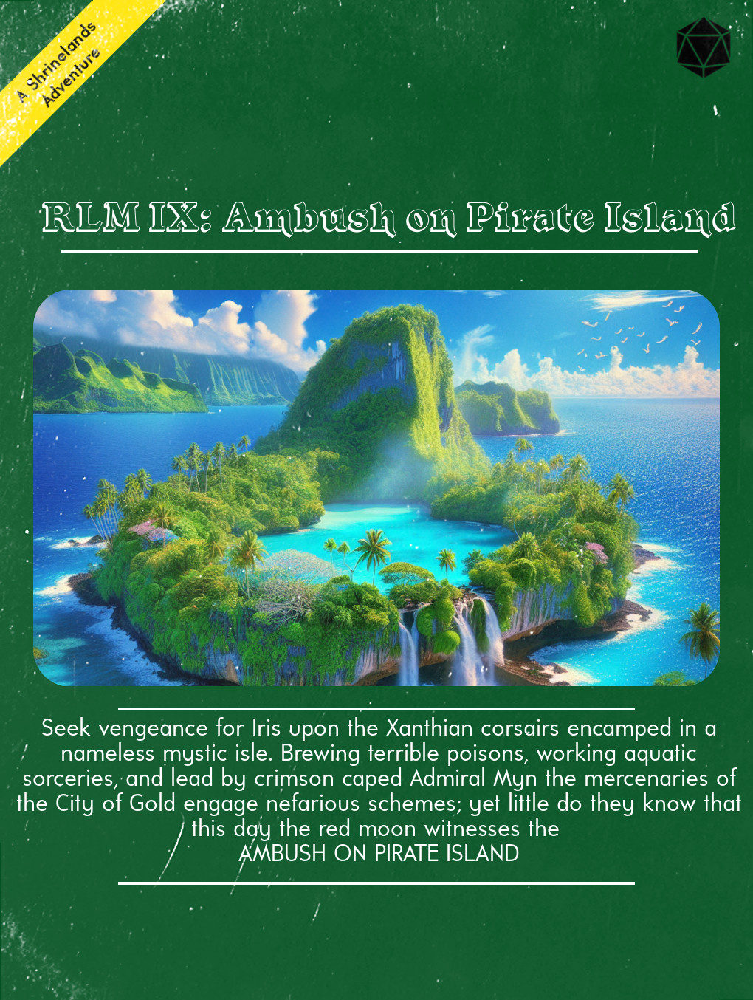

Seek vengeance for Iris upon the Xanthian corsairs encamped in a nameless mystic isle. Brewing terrible poisons, working aquatic sorceries, and lead by crimson caped Admiral Myn the mercenaries of the City of Gold engage nefarious schemes; yet little do they know that this day the red moon witnesses the AMBUSH ON PIRATE ISLAND

Notable Loot
- Arkanythera Mechanism
- Admiral Myn’s Crimson Cape
- 30 doses of Xanthicon
- Book on Summoning and Aquamancy
- Rapier +1
- 12 shortbows from the City of Gold